Белорусское кино XX века
Раздел о кино построен вокруг нескольких фильмов, каждый из которых связан с определённым историческим периодом. «Лесная быль» даёт представление о революционной борьбе 1920-х годов, «Красные листья» раскрывают тему борьбы в Западной Беларуси в 1930-е годы. «Альпийская баллада» и «Часы остановились в полночь» показывают Великую Отечественную войну с разных сторон: через историю побега из плена и через подпольное сопротивление в оккупированном Минске.
Каждый фильм сопровождается кадрами и информацией о нём. Такой формат позволяет изучать материал в удобном темпе и формировать целостное представление об эпохе - что особенно важно, поскольку традиционные методы обучения, ориентированные на линейное восприятие, плохо согласуются с особенностями клипового мышления.
Как рождалось белорусское кино
Белорусское кино начиналось с хроники, а не с игровых картин. В 1924 году при Наркомпросе БССР создали управление «Белгоскино», а в 1928-м в Ленинграде открылась одноименная киностудия (позже – «Советская Беларусь»). У истоков стояли Юрий Тарич и Владимир Гардин, один из основателей будушего ВГИКа. Они заложили основу национальной кинотрадиции: интерес к истории и попытку говорить о сложном просто и честно.
В 1930-е годы, с появлением звука, режиссеры переключились на темы воспитания нового человека и экранизации литературной классики. В Ленинграде сняли «Соловья» по Змитроку Бядуле, чеховские короткометражки «Маска», «Налим», «Медведь», «Человек в футляре» и «Поручика Киже» по Юрию Тынянову. Вышедший в 1934 году «Поручик Киже» Александра Файнциммера стал новаторским для своего времени благодаря операторской работе Аркадия Кольцатого и музыке Сергея Прокофьева. В 1939 году в Минске достроили собственное здание киностудии, и производство полностью переехало в республику.
В годы «оттепели» военная тема в белорусском кино очистилась от официоза. В 1964 году вышел фильм «Через кладбище» - полнометражный дебют Виктора Турова, выпускника мастерской Александра Довженко и Михаила Чиаурели. Режиссер показал войну без плакатного пафоса, через будни людей в оккупации. Эта картина и следующая - «Я родом из детства» - сложились в автобиографическую дилогию. По опросу критиков, фильм «Я родом из детства» признан лучшим за всю историю белорусского кино. Тема Великой Отечественной войны осталась главной и для режиссеров следующих поколений – Бориса Степанова, Игоря Добролюбова, Валерия Рубинчика. А в 1985 году Элем Климов снял здесь по сценарию Алеся Адамовича картину «Иди и смотри», которую ЮНЕСКО позже внесла в список 100 главных фильмов мира.
«Лесная быль» (1926)
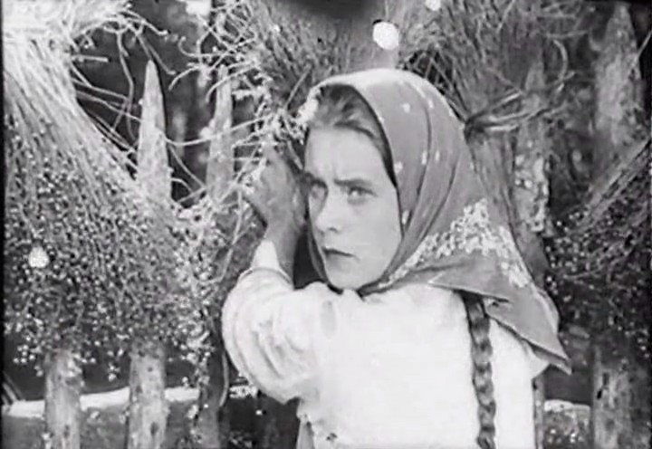
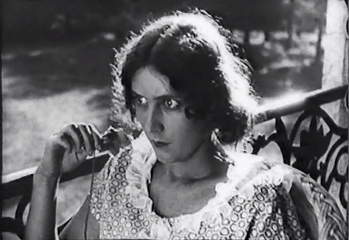
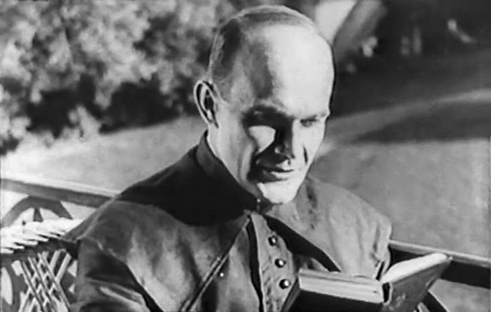
«Лесная быль» - первый белорусский игровой фильм, снятый Юрием Таричем в 1926 году на базе «Белгоскино». Его действие разворачивается в 1920 году, когда Беларусь стала ареной столкновений между Красной Армией и польскими войсками. В центре сюжета – юный пастух Гришка, который становится партизанским разведчиком. Фильм ценен не только как исторический документ, но и как первая попытка создать на экране национальные образы: именно здесь зрители впервые увидели аутентичный белорусский лес, деревенские хаты и быт партизан. Несмотря на техническую скромность немого кино тех лет, картина заложила фундамент для всей будущей киноиндустрии республики. Именно с «Лесной были» начался официальный отсчет истории белорусского кинематографа.
«Красные листья» (1958)
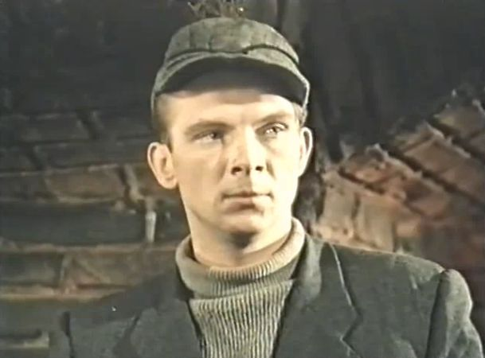
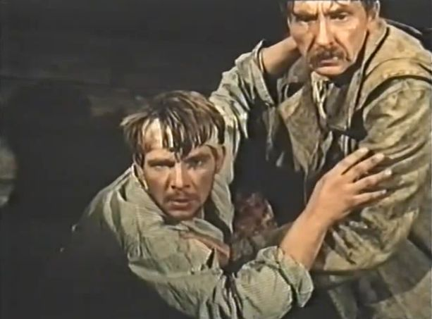
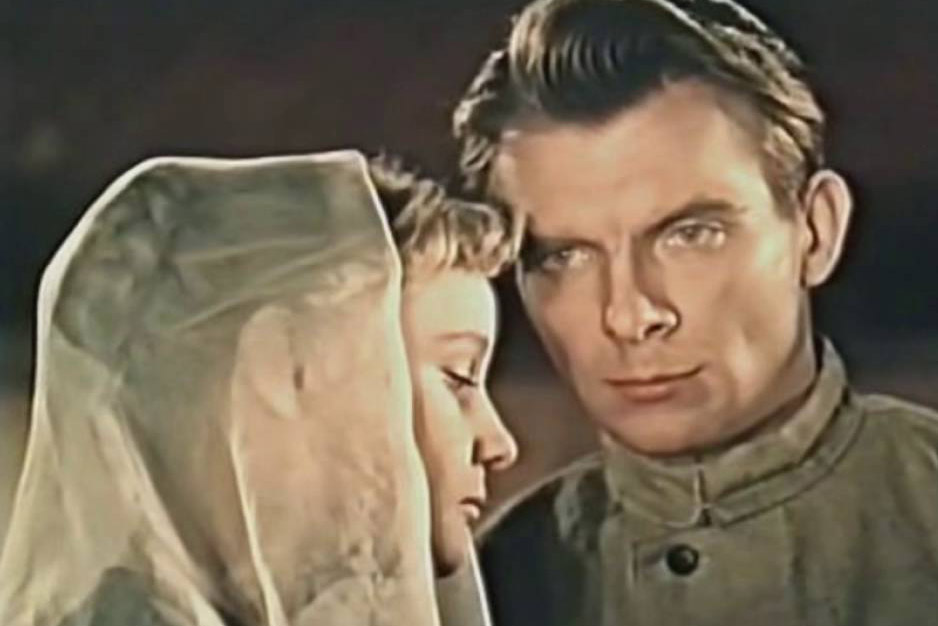
Фильм Владимира Корш-Саблина «Красные листья», снятый в 1958 году, стал одной из самых заметных советских картин о подпольной борьбе в Западной Беларуси. Сюжет во многом опирается на биографию Сергея Притыцкого – реального исторического деятеля, участника революционного движения на оккупированных Польшей территориях. Действие разворачивается в середине 1930-х годов в условиях жесткого национального и социального гнета. Фильм детально воссоздает атмосферу подполья, аресты и знаменитые судебные процессы тех лет, которые прочно вошли в историческую память белорусов. Снятая в период «оттепели» картина ушла от излишней плакатности: Корш-Саблин сделал упор на сильную приключенческую линию и человеческие драмы героев. «Красные листья» закрепили успех приключенческого жанра в белорусском кино и остаются классическим экранным воплощением темы западнобелорусского сопротивления.
«Часы остановились в полночь» (1958)
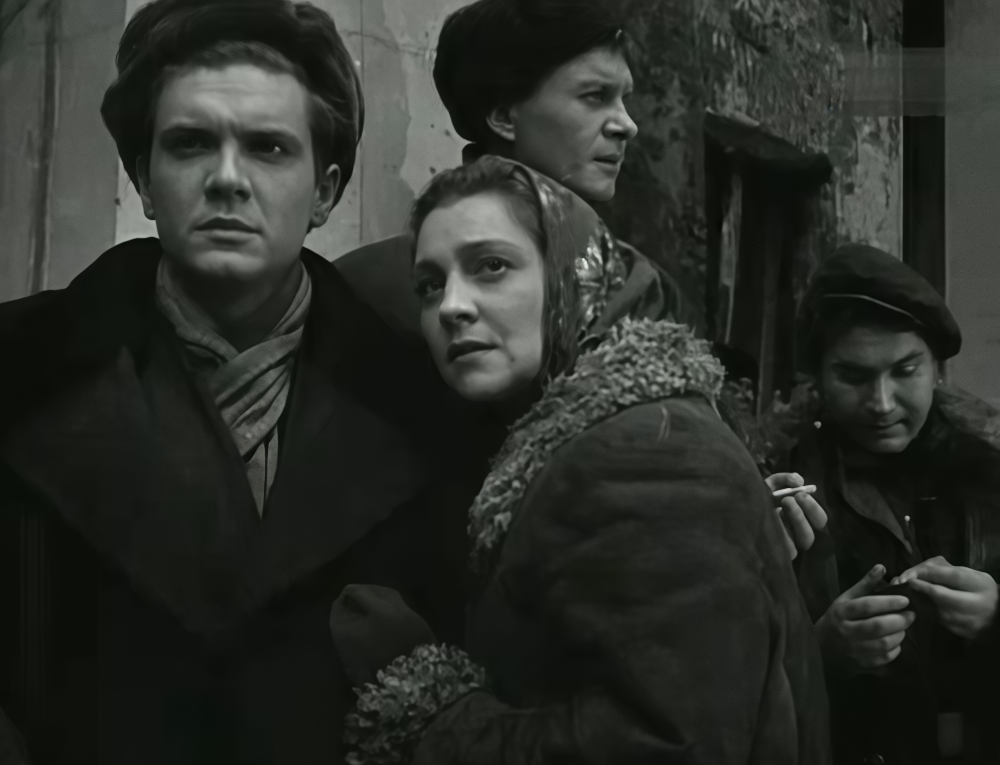
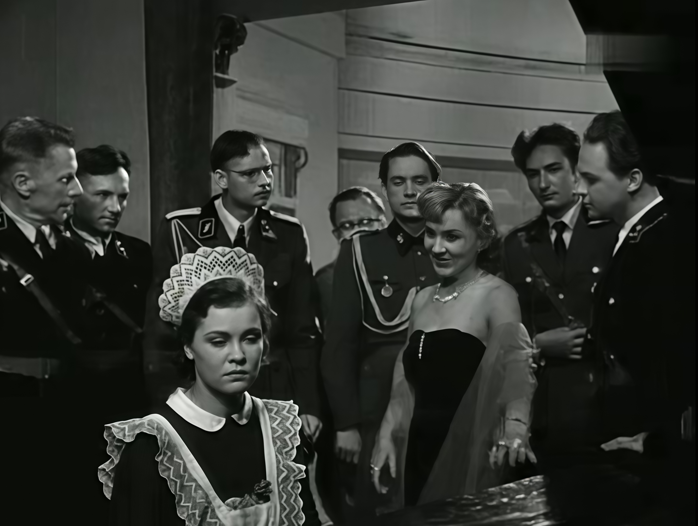
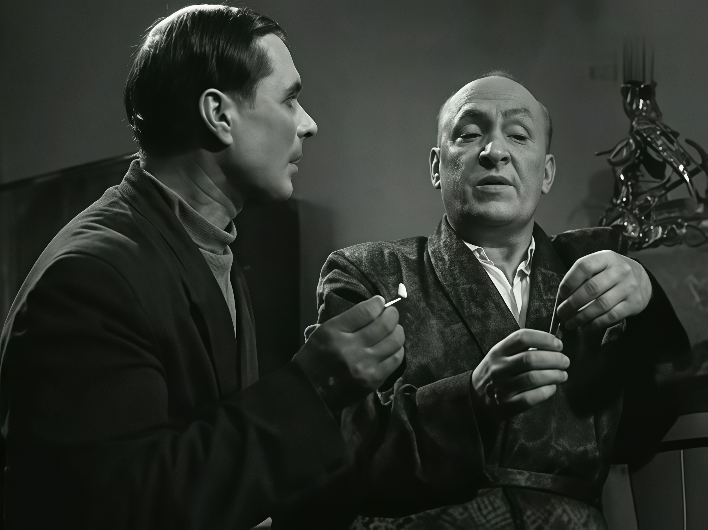
Фильм Николая Фигуровского «Часы остановились в полночь», вышедший на экраны на рубеже 1958–1959 годов, посвящен одной из самых громких операций советского подполья. В основе сюжета лежит реальная история уничтожения гауляйтера Беларуси Вильгельма Кубе в оккупированном Минске. Правда, в самой картине имена изменили: немецкий наместник выведен под фамилией фон Кауниц, а его горничная-ликвидатор – как Марина Казанич. Ленту снимали всего через 15 лет после окончания войны, поэтому атмосфера оккупированного города, постоянный страх и риск подпольной работы переданы на экране с поразительной достоверностью. Для белорусского кинематографа этот фильм стал огромным успехом – в кинотеатрах его посмотрели около 35 миллионов зрителей. Сегодня картина считается классикой отечественного военного кино, с которой началось глубокое осмысление темы минского подполья.
«Альпийская баллада» (1965)
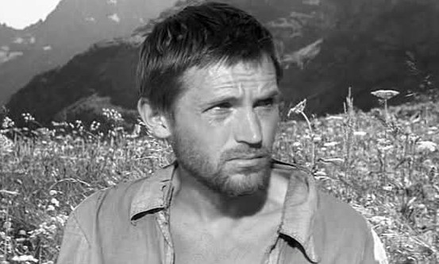
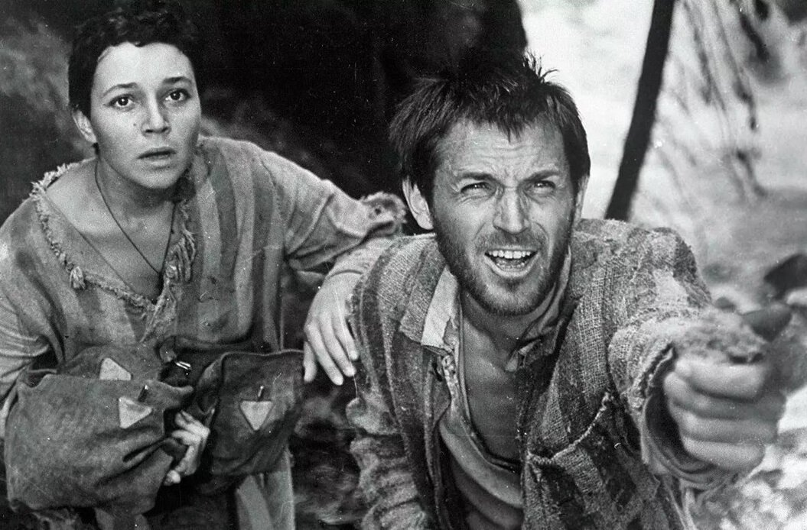
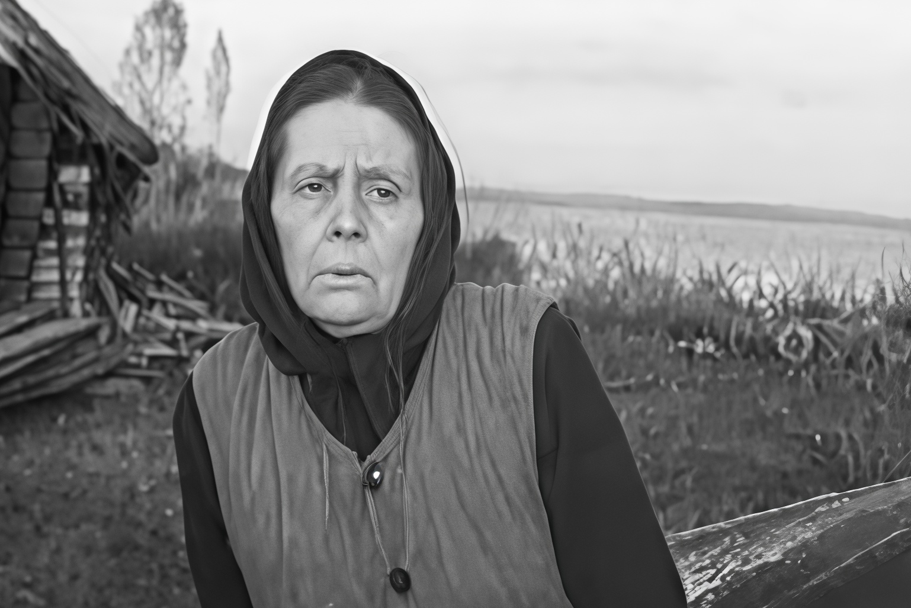
Фильм Бориса Степанова «Альпийская баллада», снятый в 1965 году, стал первой культовой экранизацией прозы Василя Быкова. Это пронзительная история о трех днях из жизни советского солдата Ивана и итальянской девушки Джулии, сбежавших из нацистского концлагеря в горах. Война здесь показана без масштабных сражений: режиссер сосредоточился на камерной драме двоих людей, которые посреди ужаса и преследования находят любовь и возвращают друг другу веру в человечность. Интересно, что альпийские пейзажи съемочная группа искала на Кавказе (в Тебердинском заповеднике) и в Калининграде. «Альпийская баллада» ушла от привычных плакатных канонов военного кино и завоевала несколько международных наград, оставшись в истории белорусского экрана как одна из самых поэтичных и честных картин о войне.